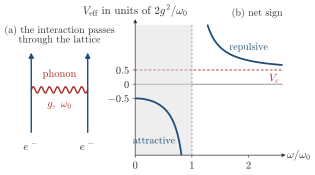
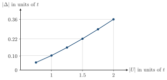
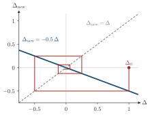

Page 3 of 16 of this session
5.4 The interacting Hamiltonian and the origin of attractive interactions
Electrons repel each other, so where does an attraction between them come from, and how does it give a pair amplitude? We will now see that a phonon gives an effective attraction at frequencies below its own frequency \(\omega_0\). In the second part of the page this attraction gives the mean-field Hamiltonian (5.4), with a pairing \(\Delta_n\) that can be nonzero only for \(U<0\).
As in Section 1.12, we start from the general interacting Hamiltonian \(H = \sum_{ij}t_{ij}c_i^\dagger c_j + \sum_{ijkl}V_{ijkl}c_i^\dagger c_j^\dagger c_k c_l\). The interaction \(V_{ijkl}\) can come from the plain electrostatic Coulomb repulsion, which is repulsive, but it can also be an effective interaction mediated by another quasiparticle in the material. Examples are phonons, which are lattice vibrations, magnons, which are fluctuations of a magnetic moment, plasmons, which are collective charge fluctuations, and even more exotic mediators such as skyrmion fluctuations or valence fluctuations. For superconductivity, what matters is not the microscopic origin of \(V_{ijkl}\) but its net sign in the channel that turns out to be relevant, and superconductivity requires this channel to be effectively attractive. Schematic 5.3 shows the simplest case, where two electrons interact through a phonon. At frequencies below the phonon frequency \(\omega_0\) the phonon term is attractive, and above it the term is repulsive.

This is the natural point to distinguish the two families of superconductors.
Conventional superconductors, where the attractive channel is mediated by phonons. This is the case that we understand best. Mean-field theory, which is called BCS theory, works well at the quantitative level, and the critical temperatures of simple conventional superconductors such as aluminum or lead can be predicted from theory.
Unconventional superconductors, where the attraction is mediated by anything that is not a phonon, such as antiferromagnetic or ferromagnetic magnons, plasmons, valence fluctuations, charge fluctuations and others. Here we do not have a predictive theory that is equally reliable. Even to identify which quasiparticle mediates the attraction in a given unconventional superconductor is often still an open research question. It is one of the major unsolved problems of the field.
In our reading, a phonon mechanism can be tested with isotopes, since in the Born-Oppenheimer picture a heavier isotope changes the phonons and not the electrons. In sulfur hydride at high pressure, this article sees a sharp drop of the resistivity to zero, and magnetic susceptibility measurements confirm a \(T_c\) of \(203\) K. The same article reports a pronounced isotope shift of \(T_c\) in sulfur deuteride, which it calls suggestive of an electron-phonon mechanism consistent with BCS theory. The probes are the resistivity and the magnetic susceptibility. Our reading is that deuterium, which is heavier than hydrogen, lowers the phonon frequency \(\omega_0\) of Schematic 5.3, and with it the window of frequencies where the interaction is attractive.
5.5 The mean-field pairing Hamiltonian in detail
Let us now build the mean-field pairing Hamiltonian with the same care that we used for the charge density wave of Section 1.13 and the magnet of Section 1.14. In Session 1 we only pointed at \(\Delta = \langle cc\rangle\).
\[H = -t\sum_{n,\sigma}\left(c_{n\sigma}^\dagger c_{n+1,\sigma} + \text{h.c.}\right) + U\sum_n c_{n\uparrow}^\dagger c_{n\uparrow}\, c_{n\downarrow}^\dagger c_{n\downarrow}, \tag{1.7}\]
This is the Hubbard chain of Section 1.14, with the hopping \(t\) between first neighbors and the onsite interaction \(U\) between the two spins of a site, written with the densities \(n_{n\sigma}=c_{n\sigma}^\dagger c_{n\sigma}\). There \(U>0\) is the Coulomb repulsion, and it gives a magnet.
We take the simplest interacting Hamiltonian that can give superconductivity, which is a one-dimensional tight-binding chain with an attractive onsite interaction between opposite spins,
\[H = -t\sum_{n,\sigma}\left(c_{n\sigma}^\dagger c_{n+1,\sigma} + \text{h.c.}\right) - \mu\sum_{n\sigma}c_{n\sigma}^\dagger c_{n\sigma} + U\sum_n c_{n\uparrow}^\dagger c_{n\downarrow}^\dagger c_{n\downarrow} c_{n\uparrow}, \qquad U<0. \tag{5.2}\]
This is the Hubbard model of equation (1.7) in Session 1, now with \(U = -|U| < 0\). It is the attractive branch of the same Hamiltonian, and its repulsive branch gives rise to magnetism, which is the topic of Session 6, where the chain comes back as (6.1). This time we do the mean-field decoupling of the quartic term in the pairing channel, also called the particle-particle channel, instead of the density channel. We define the order parameter
\[\Delta_n \equiv U\langle c_{n\downarrow}c_{n\uparrow}\rangle, \tag{5.3}\]
and we factorize
\[c_{n\uparrow}^\dagger c_{n\downarrow}^\dagger c_{n\downarrow}c_{n\uparrow} \approx \langle c_{n\uparrow}^\dagger c_{n\downarrow}^\dagger\rangle c_{n\downarrow}c_{n\uparrow} + c_{n\uparrow}^\dagger c_{n\downarrow}^\dagger \langle c_{n\downarrow}c_{n\uparrow}\rangle - \langle c_{n\uparrow}^\dagger c_{n\downarrow}^\dagger\rangle\langle c_{n\downarrow}c_{n\uparrow}\rangle.\]
This is the same Wick-type factorization that we used in all of Session 1, now applied to a different pair of operators, and it gives the mean-field Hamiltonian of the chain.
The mean-field Hamiltonian of the attractive chain is
\[H_{\text{MF}} = -t\sum_{n\sigma}\left(c_{n\sigma}^\dagger c_{n+1,\sigma}+\text{h.c.}\right) - \mu\sum_{n\sigma}c_{n\sigma}^\dagger c_{n\sigma} + \sum_n\left(\Delta_n\, c_{n\uparrow}^\dagger c_{n\downarrow}^\dagger + \Delta_n^*\, c_{n\downarrow}c_{n\uparrow}\right) - \sum_n\frac{|\Delta_n|^2}{U}. \tag{5.4}\]
The pairing \(\Delta_n=U\langle c_{n\downarrow}c_{n\uparrow}\rangle\) of (5.3) is found self-consistently, and it is exactly zero for \(U>0\), the repulsive case, while it can become nonzero for \(U<0\), the attractive case. This is the superconducting order parameter, and it is the term that breaks gauge symmetry.
The steps From the attractive chain (5.2) to the mean-field Hamiltonian (5.4)
Let us take one site first, and drop the index \(n\). The interaction of (5.2) on the site is \(U c_\uparrow^\dagger c_\downarrow^\dagger c_\downarrow c_\uparrow\). We write \(B=c_\downarrow c_\uparrow\), which removes a pair, so \(B^\dagger=c_\uparrow^\dagger c_\downarrow^\dagger\) creates it, and the interaction is \(U B^\dagger B\). We write the operator as its expectation value plus a fluctuation, \(B=\langle B\rangle+\delta B\), which gives
\[B^\dagger B=\langle B^\dagger\rangle\langle B\rangle+\langle B^\dagger\rangle\,\delta B+\delta B^\dagger\,\langle B\rangle+\delta B^\dagger\,\delta B.\]
The mean-field approximation drops the last term, which is a product of two fluctuations. We put back \(\delta B=B-\langle B\rangle\) in the two terms in the middle, and we get
\[U B^\dagger B\approx U\langle B\rangle\,B^\dagger+U\langle B^\dagger\rangle\,B-U|\langle B\rangle|^2.\]
With \(\Delta=U\langle B\rangle=U\langle c_\downarrow c_\uparrow\rangle\), which is (5.3), and a real \(U\), we have \(U\langle B^\dagger\rangle=\Delta^*\) and \(U|\langle B\rangle|^2=|\Delta|^2/U\), so
\[U B^\dagger B\approx\Delta\,c_\uparrow^\dagger c_\downarrow^\dagger+\Delta^*\,c_\downarrow c_\uparrow-\frac{|\Delta|^2}{U}.\]
The chain has one such term on every site, with its own \(\Delta_n\). The hopping and the chemical potential are already bilinear, so they stay as they are, and the sum over \(n\) is (5.4). The term that we dropped, \(U\,\delta B^\dagger\delta B\), is the only approximation of the mean-field theory.

Schematic 5.4 shows what this loop gives for the attractive chain at a low density, with the settings of the notebook. The pairing is finite for every \(U<0\) of the plot, and it grows fast with the attraction.

g1_meanfield_swave_chain.py
filling=0.1, and the loop uses nk=100 and mix=0.5, the settings of the notebook. The values are those of the pyqula of GitHub, whose loop keeps the density fixed. At \(U=-1\), \(-1.5\) and \(-2\) the values are \(0.10\), \(0.22\) and \(0.36\), so twice the attraction gives a pairing \(3.5\) times larger. At every point the smallest energy of the bands is \(|\Delta|\). At \(|U|=0.5\) a mesh of \(100\) momenta gives \(0.017\), against \(0.015\) on a dense mesh, so the plot starts at \(|U|=0.75\), where the two agree. Look at how the curve bends up, since \(|\Delta|\) grows faster than \(|U|\).Near \(\Delta=0\), one step of the mean-field loop for the pairing gives
\[\Delta_\text{new}=-U g\,\Delta.\]
Here \(g>0\) is the pair susceptibility of the bands. We take \(g\) finite near \(\Delta=0\), as at a finite temperature, and \(Ug<1\). We start from a small \(\Delta\neq0\) with \(U>0\). Which self-consistent solution does the loop find?
Show the answers
- A. ✗ False
This is false. For one site with \(U=+t\) and \(\mu=0\), the doubly occupied state costs \(+t\), while the empty and the singly occupied states have energy \(0\). The ground states have \(\langle c_\downarrow c_\uparrow\rangle=0\), so there is no pair amplitude to sustain.
- B. ✓ True
This is true. A finite fixed point needs \(-Ug=1\), which is impossible for \(U>0\) and \(g>0\). So every finite guess comes back with the opposite sign, and no finite \(\Delta\) reproduces itself. For \(U<0\) the factor \(-Ug\) is positive, and a finite \(\Delta\) can be self-consistent. The loop reaches \(\Delta=0\) only when \(g\) stays finite. In a metal at zero temperature \(g\) grows as \(\Delta\) goes to zero, so the plain loop can jump between \(+\Delta\) and \(-\Delta\) and never settle. With
filling=0.1,nk=100andmix=0.5atU=1.0, the loop of pyqula does not converge. - C. ✗ False
This is false. The sign of \(U\) enters the step as a prefactor. Take a finite \(g\), as at a finite temperature, with \(Ug=0.5\) at \(U>0\). Then the loop gives \(\Delta_\text{new}=-0.5\,\Delta\) in each step, so the guess does not stay.

The loop for \(Ug=0.5\) with a finite \(g\), with \(\Delta\) and \(\Delta_\text{new}\) in units of the first guess \(\Delta_0=1\). Each step flips the sign and halves the guess, from \(1\) to \(-0.5\) and \(0.25\), so the iteration goes to zero.
Three attractive Hubbard chains have \(0.2\) electrons per site and different \(U<0\). Their mean-field bands are
\[E(k)=\pm\sqrt{\varepsilon(k)^2+|\Delta|^2}.\]
Here \(\varepsilon(k)\) is the band without pairing, measured from the chemical potential. The pairing \(\Delta\) is found self-consistently. Each picture shows \(E(k)\) in units of the hopping \(t\). Which chain has the strongest attraction?
Show the answers
- A. ✓ True
This is true. This chain has the largest gap, with the smallest energy \(|\Delta|=0.36\) and the two branches \(2|\Delta|\) apart, and it has \(U=-2\). A stronger attraction gives a larger self-consistent \(|\Delta|\).
- B. ✗ False
This is false. Here the smallest energy is \(|\Delta|=0.22\), and the two branches are \(2|\Delta|\) apart. This chain has \(U=-1.5\).
- C. ✗ False
This is false. Here the smallest energy is \(|\Delta|=0.10\), and the two branches are \(2|\Delta|\) apart, the smallest gap of the three. This chain has \(U=-1\).
One site has the Hamiltonian \(H=Un_\uparrow n_\downarrow-\mu(n_\uparrow+n_\downarrow)\) with \(U=-2t\). For which \(\mu\) do the empty and the doubly occupied site have the same energy, and how far above them are the two singly occupied states?
Solution
The four states of the site are \(|0\rangle\), \(|\uparrow\rangle\), \(|\downarrow\rangle\) and \(|\uparrow\downarrow\rangle\), and \(H\) is diagonal in them, with the energies
\[E_0=0,\qquad E_\uparrow=E_\downarrow=-\mu,\qquad E_{\uparrow\downarrow}=U-2\mu.\]
The empty and the doubly occupied states have the same energy when \(U-2\mu=0\), so at \(\mu=U/2=-t\). At this \(\mu\) both have the energy \(0\), and the singly occupied states have \(-\mu=t\), so they lie \(t\) above the other two. This means that to add one electron to an empty site, or to remove one from a pair, costs \(t\), while two electrons together cost nothing.
The two degenerate states differ by two electrons, so a small pairing term \(\Delta\,c_\uparrow^\dagger c_\downarrow^\dagger+\Delta^*c_\downarrow c_\uparrow\) mixes them completely. We write \(\Delta=|\Delta|e^{i\phi}\) and \(|\uparrow\downarrow\rangle=c_\uparrow^\dagger c_\downarrow^\dagger|0\rangle\). The ground state is then
\[\frac{1}{\sqrt2}\left(|0\rangle-e^{i\phi}|\uparrow\downarrow\rangle\right),\]
at the energy \(-|\Delta|\). For a real \(\Delta\) the sign is minus for \(\Delta>0\) and plus for \(\Delta<0\). The state has \(|\langle c_\downarrow c_\uparrow\rangle|=1/2\) for any small \(\Delta\). This bound pair is the seed of the pair amplitude \(\Delta_n\) of (5.3), which the loop of this page computes on the chain.
Notebook check-in: session5.ipynb, “s-wave superconductivity driven by attractive interactions” (Core), and “Dependence on the strength of the attractive interaction” (Challenge)
Build the attractive-Hubbard chain of (5.2), run the pairing self-consistency loop that gives \(\Delta\) in (5.3) and (5.4), and look at how \(\Delta\) grows from zero as you make \(U\) more negative. This is the same behavior as in Session 1, where the charge imbalance grew with \(V\) and the magnetization grew with \(U>0\).
Try it. Run the loop with U=-1.0, -1.5 and -2.0 at filling=0.1. The smallest energy of the electron bands is \(|\Delta|\), and it grows from about 0.1 to 0.2 and 0.4. The gap grows fast with \(|U|\).
- In Section 6.3 the repulsive side \(U>0\) of the same chain gives the magnetization \(m\), and in Section 6.6 we find the threshold of \(U\) above which it appears.
- In Section 8.6 the singlets of a quantum spin liquid are written as a BCS state of spinons, with the same pairing structure as (5.3).
- In Section 10.6 the pairing amplitude is one of the local order parameters of the course, which are set against the topological invariants when phases are classified.